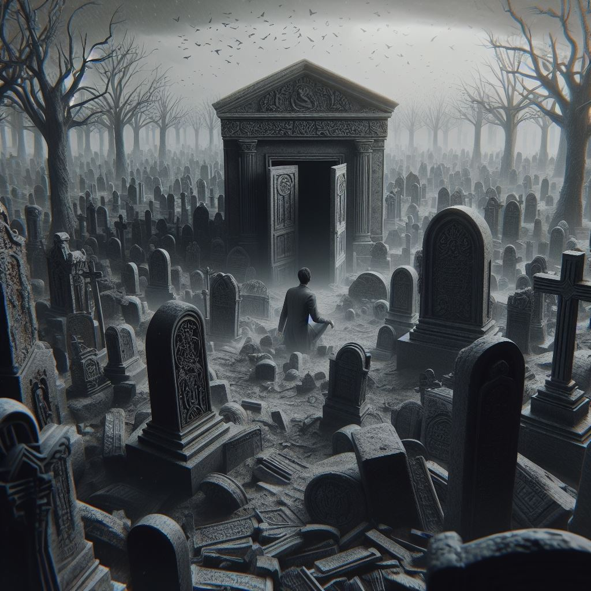
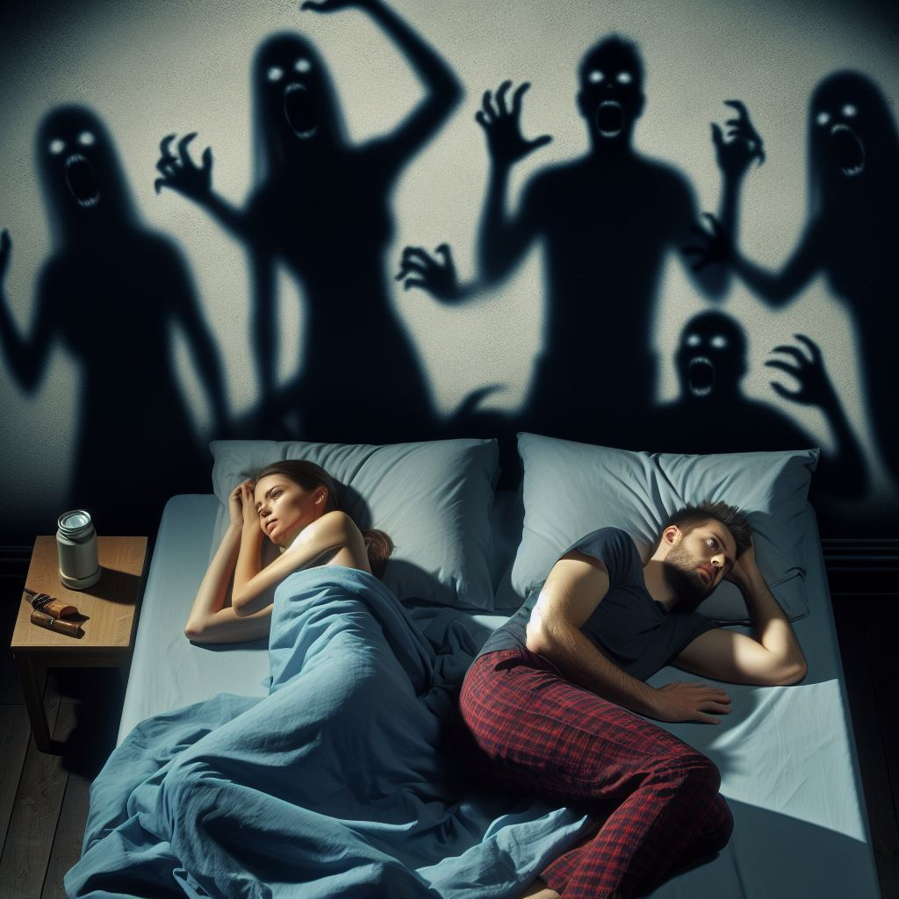
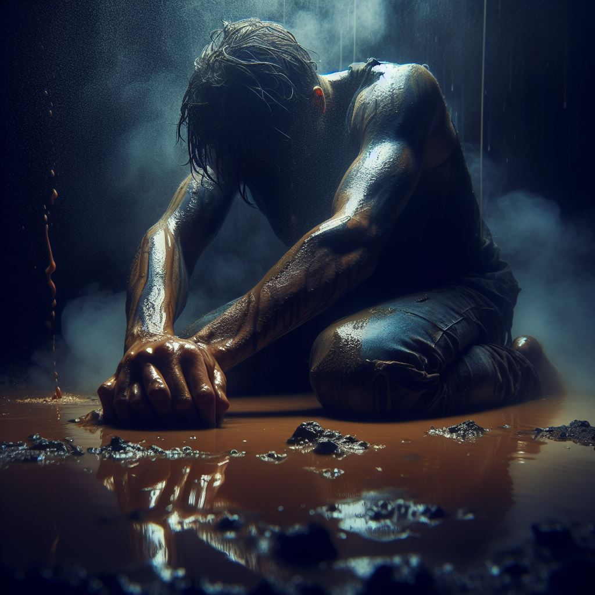

Capitulo 3
Luego de recordar aquel asesinato cometido en un completo acto de furia incontrolable, me costaba mantenerme en pie y necesitaba apoyarme en las paredes hasta que de un momento para otro comenzaron fuertemente los dolores de cabeza, entonces me desmayé. “Mientras la casa ardía en llamas desde dentro quemando toda evidencia posible, nosotros huimos del lugar a pie, para cuando estuvimos lejos del lugar y el humo apenas podía verse en la distancia, nos miramos y una simple sonrisa cómplice terminó con el incómodo silencio que desde hacía veinte minutos reinaba entre los dos. -¿estás bien?- pregunté a la vez que le sonreía. -sí, me siento apenada, pero era lo correcto, ahora la maldad arde en llamas en esa casa y así tenía que ser- dijo Valentina sorprendiéndome con tan profundas palabras- si cada decisión que tomamos nos trajo a este lugar, si lo que hice me trajo aquí contigo, no me arrepiento de nada- siguió contestándome la sonrisa y aclarando mi alma por completo. Simplemente tomé su mano y seguimos caminando hasta llegar al gran paredón del cementerio, en ese momento todo se volvió negro y sentí un dolor insoportable en mi cabeza, sentía una necesidad de matarla y terminar con esto de una vez por todas. Mi yo de aquella primera noche quería salir a la luz y terminar con todo lo que me había llevado a aquel lugar, a aquel maldito destino donde nadie me amaba más que aquella chica, pero no podía controlarme. Arrastrándola la entré al cementerio y en una vieja cripta abierta la golpeé tantas veces como pude hasta matarla para luego dejarla pudriéndose allí, mientras me alejaba el dolor de cabeza calmaba, pero la angustia y la locura no se contenían en mi interior” Desperté unos cuantos minutos después, ya era oscuro, jamás había sentido tal desesperación así que tuve que ir a ese cementerio, aun no podía mantenerme en pie pero hice lo que pude, necesitaba hacerlo. Mientras me encontraba en el ascensor sentía que mi mundo se terminaba por completo, esa locura me llenaba la mente y necesitaba llegar allí. En el autobús, todos miraban como me costaba mantenerme en pie, sentían mi paranoia, necesitaba llegar a esa maldita cripta y ver si lo que había sucedido era real, si había matado a Valentina. Llegué al cementerio minutos después intentando calmar mis nervios y mi desesperación, tratando de arrancar de mi mente el pensamiento de haberla asesinado, cada paso hacia la cripta era más pesado y podía sentir a mis amigos susurrándome cosas como “al final lo hiciste tú”, “completaste nuestro trabajo”. Esas cosas me hacían enfurecer y querer matarlos otra vez. La puerta de la cripta se encontraba cerrada pero no con llave, con mucho miedo la abrí lentamente y entré despacio. Dentro podía sentirse en el aire un hedor a muerte leve y tan solo caminar unos pasos se dejaba ver un charco de sangre que provenía de detrás de unos ataúdes viejos. Me acerqué y se podía ver un cuerpo cubierto por una gabardina negra manchada con sangre y cuando por fín al cadáver se encontraba por completo a mi vista pude sentir las puertas del paraíso abrirse ante mí, era un hombre joven de unos 30 años aproximadamente, apuñalado unas cuantas veces y con unas palabras ilegibles marcadas en su mejilla. Con muchísimas preguntas en mi cabeza además de la confirmación de que solo había sido una pesadilla y el dolor que ya me estaba aturdiendo decidí salir del lugar y volver al departamento pues Valentina habría regresado quizás. ¿Cómo había llegado el cuerpo allí y que tuvo que ver mi sueño con ese lugar? Solo tenía que esperar a las noticias, pues en Croowd, la ciudad donde vivo todo transcurría bastante rápido. Saliendo del cementerio pude ver como dos sujetos con actitud sospechosa seguían a una muchacha y uno justo desenfundaba una navaja, tomé un trozo de baldosa que se encontraba suelto e hice lo que sabía que tenía que hacer, entonces el dolor de cabeza cesó.
“Desperté con ella a mi lado como cada hermosa mañana, nos dimos un beso apasionado para luego hacer el amor como jamás lo habíamos hecho. Quizás fue la adrenalina vivida la noche anterior y que cada cosa vivida desde hacía días nos había excitado y el morbo de esas escenas nos completaba en cada situación sexual. En ese momento sentía ganas incontrolables de comerla entera y por completo, nuestras pieles se sentían como una sola y cada pensamiento oscuro desaparecía de mi mente dejando paso a dos mentes unidas en una sola en ese momento de sexo apasionado. El mundo podía caerse a mí alrededor, pero nosotros no dejaríamos lo nuestro por ello. Después de aquel apasionado momento ella simplemente se levantó dejándome solo en la cama, pensé que volvería pero para mi sorpresa no lo hizo. Minutos más tarde fui a buscarla y se mostraba fría, como jamás había estado desde que nos conocíamos y necesitábamos el uno al otro, me senté a su lado frente a la TV pero no mediaba palabra y ni siquiera me miraba a los ojos. -Valentina, ¿te encuentras bien?- pregunté de la forma más tierna posible, pero solo obtuve una mirada triste en respuesta a lo que pasaba en las noticias, una casa quemada con dos cuerpos dentro completamente quemados, claramente era nuestra obra de la noche anterior. El periodista hablaba y mientras él lo hacía las lágrimas brotaban de los ojos de mi ángel y por más que lo intenté, no había palabras de consuelo para ella que salieran de mi boca, solo silencio y un abrazo el cual hubiese querido que jamás acabara, pero lo hizo abruptamente para luego traer dos cafés al sofá. Tomó de un sorbo suyo, se cambió y salió sin decirme nada solo dejando lágrimas que caían contra el suelo como alfileres en mi corazón. Después de tomar el café me desmayé hasta oír el timbre, cuando atendí un detective se encontraba a mi puerta” Desperté justo cuando debía bajar del autobús, entre la 55 y la 3ra, eran las 7:00 AM y el Bar de Decke estaba abierto desde muy temprano los días de semana y quizás esos deliciosos panqueques con miel que hacen podrían sacarme de mi estado de ánimo y una buena taza de café podría animarme luego de pasar la noche entera dando vueltas por la ciudad antes de seguir buscando mientras me dirigía al departamento. En el bar mientras disfrutaba mi café pude oír en la TV y como dos policías hablaban a la vez acerca de dos delincuentes asesinados en el cementerio con un trozo de cemento desprendido del suelo y de cómo una mujer, víctima de ambos, fue salvada por un tercero a quien no logró ver que la noqueó antes de acabar con los bandidos, para cuando ella despertó los dos hombres yacían asesinados en el suelo con el pecho despedazado por tantos golpes. Al oír eso y que hablaban de un “héroe demasiado agresivo” pedí la cuenta, pagué y me dispuse a salir del lugar. En ese instante todo se volvió oscuro y una bruma anaranjada cubrió todo el bar, ni siquiera por las ventanas podía ver la calle. Cuando quise darme cuenta todos en el bar me estaban observando con rostros ennegrecidos de una putrefacción desorbitante y ojos vacíos completamente negros. Comencé a caminar lentamente hacia la salida y a medida que lo hacía todos se paraban y me seguían con la mirada hasta que pude salir del lugar. Cuanto abrí la puerta aparecieron frente a mi Ariel y Juan con rostros deformes, en ese momento grité y volví en sí, aún estaba sentado en el bar terminando mi café. Salí del lugar tan rápido como pude con la esperanza de que aquella alucinación hubiera sido todo, pero no había acabado. Por la calle podía seguir viendo una bruma anaranjada que me ponía triste, que me arrastraba hacia el suelo, locura, eso sentía en mi interior, anhelando aquel día en el que me sentí bien y completo por última vez, la noche de aquella violación impedida. Continúe caminando, solo esta vez, la gente era normal a mi alrededor y yo solo parecía estar volviéndome loco, entonces sentí mientras caminaba una puñalada en el pecho y como si alguien hiciera un rajo en él, pude sentir mi corazón detenerse en ese instante, supe que algo horrible había pasado y tenía que ir hacia el departamento lo antes posible. Caminé por la 3ra entre la bruma que poco a poco se iba disipando, y a medida que sucedía eso miles de pensamientos pasaban por mi mente, como llamándome hacia mis propios recuerdos, llamándome a recordar todo lo sucedido desde el primer día. Así caminé, perdido entre mis pensamientos retorcidos y recuerdos que me llevaban hacia la nada misma. Llegué al edificio y para ese entonces la bruma ya se había disipado por completo, aún sentía el dolor en el pecho, ese vacío me quebraba desde dentro, y aún podía sentir otras tantas puñaladas en mi abdomen que cuyo dolor no cesaba, y a medida que subía los escalones podía sentir que el dolor se volvía más intenso a cada uno que pisaba, mientras más cerca me encontraba de mi departamento. Mis piernas temblaban y las zapatillas parecían tener suelas de acero, pues cada vez pesaban más. Cuando abrí la puerta del departamento pude sentir el olor a sangre desde la entrada, entonces corrí rápidamente hacia la habitación. Aquella escena, el dolor que sentía se intensificaba por mil veces más mientras caía de rodillas y mis manos golpeaban la alfombra de la habitación de forma desesperada y sin respiro, todos aquellos pensamientos oscuros se resquebrajaban y mezclaban entre sí haciéndome perder la poca cordura en ese momento. Me habían arrancado el corazón mientras estaba vivo, había muerto para llegar al cielo solo para ver que se encontraba en llamas y un ángel rubio se hallaba encadenado a una cama, sin vida ni alma para salvar. Pues la mía se había esfumado en aquel bar, con aquella puñalada que sentí en el pecho cuando acababa la vida de mi Valentina.
Arrodillado, sin ganas de vivir, así me quede en la puerta de la habitación mientras observaba el cuerpo sin vida de mi amor, la angustia me mataba por dentro. Por mis gritos unos vecinos habían llamado a la policía, quienes acababan de llegar con el detective Matts a la cabeza sabiendo el departamento de quien se trataba, pues él ya había estado aquí. No tardaron en llevarme a la estación de policía para hacerme preguntas, y aunque era un testigo más, podía sentir sus palabras apuñalándome poco a poco, acusándome de algo que no había cometido y de como todas aquellas personas a las que quería, de alguna forma terminaban muertas. En cierto momento, pude sentir como las palabras del Detective Matts se volvían cada vez más distantes, tanto que eran casi un susurro en la lejanía, un susurro que casi no podía oír. Volteé la cabeza en un segundo, tan rápido como pude cuando sentí algo detrás de mí. Entonces lo vi, se encontraba allí en el espejo, y por más que se pareciera a mí sus rasgos siniestros hacían estremecerme y erizar mi piel del miedo, su mirada era inquietante y aterradora, jamás parpadeaba, me hablaba y con sus palabras eclipsaba a las del detective, que hablaba en vano desde hacía ya varios minutos. Sin darme cuenta, por más que me encontrase escuchando a aquel malvado ser, seguí contestando las preguntas del Detective Matts. -¿no le resulta extraño que todos a los que se acerca acaban muertos de la peor forma?, Sr. Moreno- preguntó el detective Matts mofándose de mí, haciéndole una mueca perversa. -En un principio pensé que usted era un Héroe por salvar a la chica, pero…..el hombre del cementerio, seguro lo escuchó en las noticias, fue pareja de Valentina hasta unas semanas antes que fue salvada de ser violada- terminó por decir el Detective mientras mi mente se perdía en aquellas palabras, aquella había sido una revelación para mí y yo intentaba no perderme en mis pensamientos, pero los susurros provenientes de aquel ser siniestro eran determinantes “Mantén la calma” repetía constantemente, obligándome a obedecerlo. -No lo conocía Detective, de eso puede estar seguro, lamento su muerte pero estoy seguro de que Valentina no pudo haberlo matado, era incapaz- respondí mientras Matts y su colega oían atentamente, aguardando- pero déjeme decirle algo, soy un simple testigo así que si no tiene nada en mi contra, puede dejarme marchar para llorar a Valentina en paz- volví a decir mientras me levantaba de la silla ante la mirada sorprendida y confundida a la vez de los policías, podía ver de reojo como aquel ser reflejado y siniestro se levantaba junto conmigo y me acompañaba a dejar el lugar. Podía sentir como caminaba junto a mí, ocupaba mi lugar en cada reflejo acompañándome, ayudándome a no romper en llantos por mi pérdida, no tenía lugar a donde ir ni alguien que me acompañe más que mis padres, así que allí debía ir más allá de lo que pudiera suceder. Por primera vez en mucho tiempo me sentía en paz, los sentimientos oscuros desaparecían, parecía que la fantasía de que ella muriera era más que eso, era algo real y necesario en mi vida. Perdido entre mis confusos pensamientos llegué a casa de mis padres, pero podía sentir desde la puerta el hedor inconfundible a sangre que inundaba el ambiente, parecía que ese olor activaba mis sentidos más oscuros y sus susurros se hacían cada vez más seguidos y ensordecedores. La imagen era hermosa, pero horrenda a la vez, mis padres habían sido asesinados y yo era incapaz de derramar lágrimas por ellos, casi podía enamorarme de la forma en la que los habían asesinado. Claramente había sido obra de una mujer, pero me encontraba tan perdido y confundido que no podía pensar con claridad, las voces comenzaban a apabullarme y lentamente me perdía en mis pensamientos más profundos. Unas risas de mujer se oyeron desde la segunda planta de la casa, una risa muy conocida que parecía venir desde el que solía ser mi cuarto. Aunque parecía incapaz de sentir miedo, los susurros de mi reflejo maldito me acompañaban y daban aliento a continuar, pero mientras más me acercaba y esas carcajadas se convertían en voces de mujer, los susurros desaparecían mientras más reconocía aquella voz. -No sabía si vendrías, pero igualmente te preparé una linda bienvenida- dijo una mujer de espaldas, cuya voz angelical colmaba mi ser, si no era mi Valentina, era una visión suya que me atraía hacia su lugar. -¡No eres real!, te lloré y te vi muerta delante mío- contesté ante sus palabras mientras mi mundo parecía desplomarse nuevamente mientras que mi ser, de alguna forma parecía fortalecerse. -Claro que soy real Mi Vida, el solo hecho de que ansíes verme muerta muy en lo profundo de tu ser, de que aquel día se repita una y otra vez en tus pesadillas anhelando concretar el acto y seguir con tu vida normal, no significa que haya muerto o que lo que crees haber visto sea real- dijo volteándose mientras venía a mi mente el momento de encontrar el cuerpo en el Hotel. “ingresé a la habitación y pude ver el cuerpo sobre la cama, quedé paralizado cuando pude recordar y ver a una mujer desconocida sobre la cama, no se trataba de valentina, pero si vinieron a la mente las imágenes de como ella había cometido el asesinato mientras me lo relataba en mi estado de shock, tanta brutalidad, tanto odio liberados contra aquella mujer.” Mientras ella me contaba el cómo había asesinado a su ex novio y a su novia con quien la había engañado semanas antes del suceso que llevó a conocernos, me dejaba llevar por esas palabras e imaginaba el error que había cometido al creer en su muerte y en lo que se había convertido ella y si, definitivamente, había sido todo por mi culpa. Pero por algún motivo, alguna razón desconocida para mi me sentía mejor cuando pensaba que ella estaba muerta y ciertamente ella no estaba del todo contenta con migo en ese momento. Aunque aún así, se sentían las ganas de ambos de besarnos apasionadamente, aun con los cuerpos de mis traidores padres en la casa. -Tú me salvaste para convertirme en un despojo, me arruinaste psicológicamente, ¡asesinaste a mi familia!- repetía ella una y otra vez mientras subía un poco de tono mientras más lo repetía. -Así que ahora estamos casi a mano, tus padres murieron y solo necesito salvarte- decía mientras llevaba la punta de su cuchillo justo hacia la boca de mi estómago, pero en el instante en el que me besó, pude oír nuevamente los susurros de mi reflejo oscuro, aquel que era todo lo que yo no podía ser, todo lo que yo renegué de mí. Me aparté de todo pensamiento puro, y quebrando el amor que alguna vez pude sentir con ella con toda la fuerza que salía de mi ser, arranqué el cuchillo de sus helados dedos ensangrentados e hice lo que tenía que hacer con mis propias manos, pude sentir como aliviaba su alma y su vida mientras moría, como dejaba de ser aquello en lo que la había convertido y mientras lo hacía, aquel ser siniestro se fusionaba con migo mientras me tomaba de los hombros, volviendo a mi todo lo que había sido y había renegado de ello por la locura que abrumaba mi mente hasta ese momento. Instantes después, solo una cosa ocupaba lugar en mi mente, debía huir, el Detective Matts vendría tras de mí.